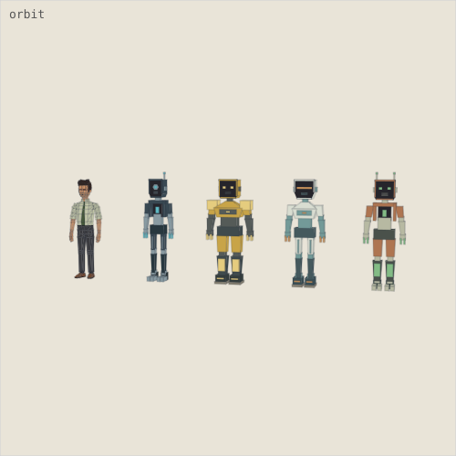
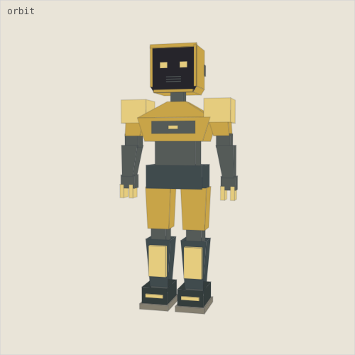

MODULAR CHARACTERS
LESS MESH. MORE CHARACTER.
Women, men and robots built from the same modular system. Thin and fat bodies change torso width, depth and limb proportions, not just overall scale. Human faces use simple planes; robot faces use LED eyes, scanners and optics. Swap geometry independently from skin, hair, clothes and shell colours.

The download keeps the modules separate. Open it with f↑ in Spider Paint. Changes here do not modify the Wyoming cast or the existing character builder.

Loading module library and native viewer...
Twenty starting points, not twenty fixed models
Seven human silhouettes include thin, fat, shaped-waist and wider-hip builds, with matching garments, limbs and feet. Three mechanical frames combine with interchangeable casings, grippers, actuator legs, magnetic feet, antennae and sensor faces. The four robot presets cover scouting, dock work, service and maintenance.
No body, hairstyle or garment is gender-locked. Human and mechanical sections can also be mixed for cyborg designs. The thin/fat comparison pairs deliberately keep the same head, outfit and height, so the actual body geometry is easy to compare.
This is the visual library for the eventual 64-person Wyoming cast. These are reusable design presets, not yet an assignment of all 64 named roles; the Wyoming scenes remain unchanged.
Design rules
Head: a four- or six-corner front silhouette extruded into a box, with small block ears. No dense spherical head mesh. Face: flat, front-facing polygons 2–3 mm above the head surface; no eye sockets or sculpted lips. Hair: coarse caps, separate flat fringes, side panels and simple angular volumes.
Robots: mechanical necks and two-prong grippers, separate joint blocks, open or armoured chassis and solid casing heads with front sensor panels. Robot shell palettes independently colour structural metal and illuminated indicators; human skin colours do not recolour mechanical parts.
Modules: body skin / head / face / hair / top / bottom / shoes / accessory. Skin and hair colours are independent of clothes. Matching body-specific garments prevent mismatched shoulder widths. Materials are face palette slots, not texture maps. These are static, modular geometry studies; a new animation rig or character-builder integration is not included.
Scale: Betterman is 1.912 m tall and appears at the left of the lineup. References reviewed: all four images in the supplied human/ folder, plus Jxnblk: Modular Characters Part I. The modular workflow and broad visual principles are references; these meshes are newly constructed, not copied character assets.